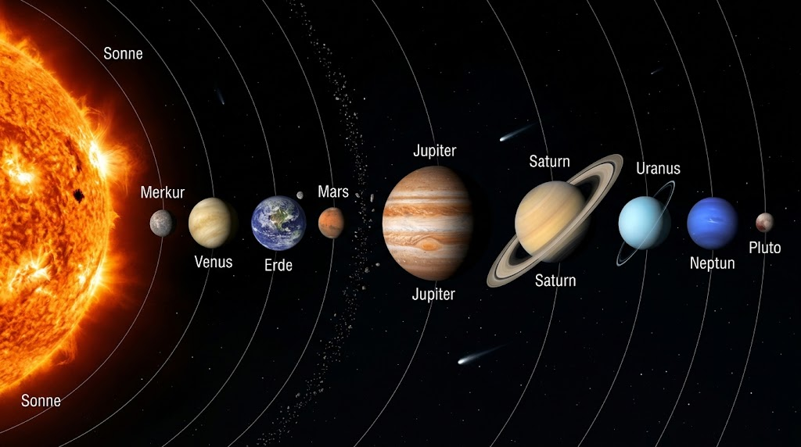
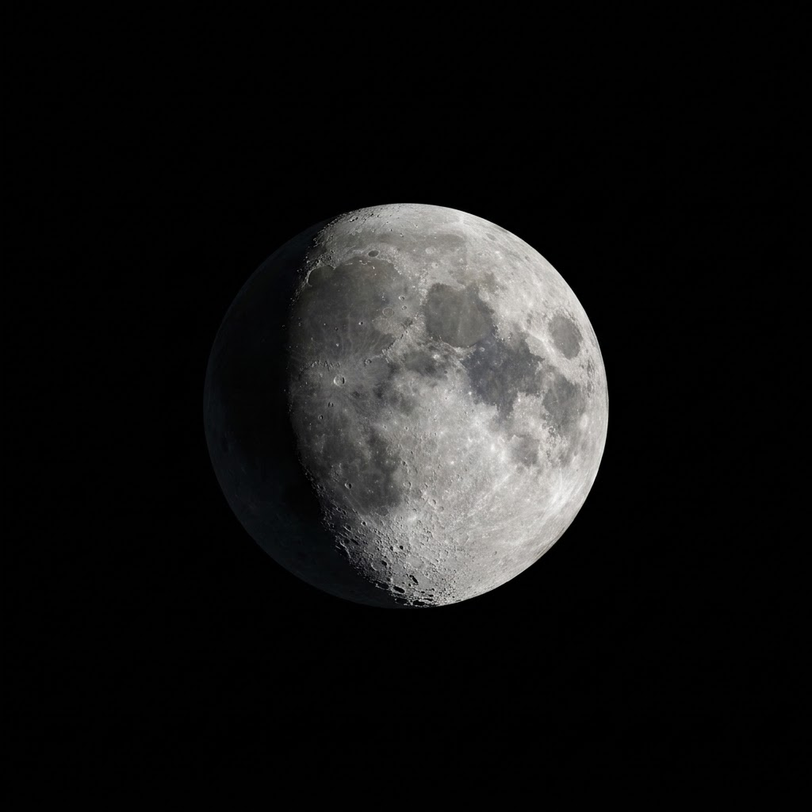
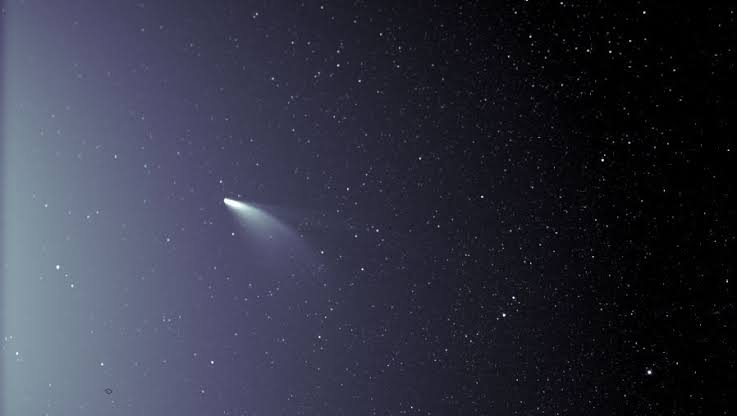
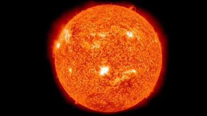

Unser Sonnensystem
„Das Unverständlichste am Universum ist im Grunde, dass wir es verstehen.“
- Albert Einstein
Sonne
Das massereiche Zentrum und der einzige Stern unseres Planetensystems.

Die Sonne ist das Herzstück unseres Planetensystems und macht über 99 % der gesamten Masse des Sonnensystems aus. Durch Kernfusion wandelt sie in ihrem Inneren pro Sekunde Millionen Tonnen Wasserstoff in Helium um und erzeugt dadurch das lebensnotwendige Licht und die Wärme für alle Planeten.
Die Sonne ist etwa 1,4 Millionen Kilometer groß – die Erde würde mehr als eine Million Mal in sie hineinpassen.
Merkur
Als sonnennächster Planet besitzt Merkur keinerlei natürliche Monde.

Merkur ist der sonnennächste Planet und zugleich der kleinste im Sonnensystem. Da er praktisch keine nennenswerte Atmosphäre besitzt, um Wärme zu speichern, herrschen extreme Bedingungen: tagsüber klettert die Temperatur auf über 400 °C, während sie nachts auf eisige -170 °C absinkt. Seine kraterübersäte Oberfläche erinnert stark an den Erdmond.
Merkur besitzt weder eine Atmosphäre noch Monde und benötigt nur 88 Tage für eine vollständige Sonnenumrundung.
Venus
Die Venus ist neben Merkur der einzige Planet im Sonnensystem, der keinen Mond hat.

Obwohl Venus weiter von der Sonne entfernt ist als Merkur, ist sie der heißeste Planet im System. Schuld daran ist eine extrem dichte Kohlendioxid-Atmosphäre mit Schwefelsäurewolken, die einen extremen Treibhauseffekt erzeugt und die Oberfläche auf rund 470 °C bei ca. 93 Bar Bodendruck aufheizt. Wegen ihrer enormen Helligkeit wird sie oft als Morgen- oder Abendstern bezeichnet.
Die Venus rotiert rückwärts (im Uhrzeigersinn) und ein Tag auf ihr dauert länger als ihr gesamtes Jahr.
Erde
Unser Heimatplanet und die einzige bekannte Oase des Lebens im Universum.

Unser Heimatplanet ist die einzige bekannte Welt mit flüssigem Oberflächenwasser, einer schützenden Sauerstoff-Stickstoff-Atmosphäre und nachgewiesenem Leben. Rund 71 Prozent ihrer Oberfläche sind von Ozeanen bedeckt. Der vergleichsweise riesige Erdmond stabilisiert mit seiner Gravitation verlässlich die Neigung der Erdachse und ermöglicht so stabile Jahreszeiten.
Der Erdmond ist im Verhältnis zur Größe seines Heimatplaneten außergewöhnlich massereich und stabilisiert die lebenswichtige Erdachse.
Mars
Der Mars besitzt zwei kleine Monde, Phobos und Deimos, bei denen es sich vermutlich um eingefangene Asteroiden handelt.

Mars verdankt seinen Beinamen „Roter Planet“ dem feinen Eisenoxidstaub auf seiner trockenen Oberfläche. Neben gewaltigen Canyons beherbergt er mit Olympus Mons den höchsten bekannten Schildvulkan im Sonnensystem. Seine beiden winzigen Begleiter Phobos und Deimos wurden 1877 entdeckt und gelten als Überreste vergangener Kollisionen oder eingefangene Gesteinsbrocken.
Auf dem Mars existieren zwei kleine, unregelmäßige Monde: Phobos und Deimos, die vermutlich eingefangene Asteroiden sind.
Jupiter
Jupiter ist ein gigantisches System mit über 90 Monden, von denen Ganymed der größte Mond im Sonnensystem ist.

Als gigantischer Gasriese besitzt Jupiter mehr Masse als alle anderen sieben Planeten zusammen. Sein auffälligstes Merkmal ist der „Große Rote Fleck“, ein seit Jahrhunderten tobender Wirbelsturm. Jupiter beherbergt unter anderem die vier großen Galileischen Monde Io, Europa, Ganymed und Kallisto, unter deren Eiskrusten teils flüssige Ozeane vermutet werden.
Jupiter wirkt mit seiner enormen Schwerkraft wie ein kosmischer Schutzschild, der Kometen ablenkt und so die inneren Planeten schützt.
Saturn
Der bunte Herr der Ringe besitzt weit über 100 bekannte Monde und eine geringere Dichte als Wasser.

Saturn ist vor allem für sein spektakuläres, weithin sichtbares Ringsystem berühmt, das aus Milliarden Eisbrocken, Staub und Gesteinspartikeln besteht. Trotz seiner enormen Ausmaße besitzt der Gasriese die geringste mittlere Dichte aller Planeten unseres Systems. Sein größter Mond Titan ist der einzige Mond mit einer dichten Stickstoffatmosphäre.
Saturn besitzt das prachtvollste Ringsystem und mit Titan den einzigen Mond im Sonnensystem, der eine dichte Gashülle besitzt.
Uranus
Die bekannten Monde des Uranus sind nach Figuren von Shakespeare und Pope benannt.

Uranus ist ein kalter Eisriese, dessen bläulich-türkise Färbung durch Methangas in der oberen Atmosphäre hervorgerufen wird. Seine größte Besonderheit ist die extreme Neigung der Rotationsachse um fast 98 Grad: Er rollt förmlich wie eine Kugel seitlich auf seiner Umlaufbahn um die Sonne.
Aufgrund seiner extremen Achsenneigung dauern Tag und Nacht an den Polen des Uranus jeweils 42 Jahre ununterbrochen an.
Neptun
Neptun hat 16 bekannte Monde, von denen der eisige Triton rückläufig um den Planeten kreist.

Neptun ist der äußerste der acht regulären Planeten. Der tiefblaue Eisriese ist für extrem unwirtliche Wetterverhältnisse bekannt – hier toben die stärksten gemessenen Stürme des Sonnensystems mit Geschwindigkeiten von über 2.000 km/h. Für eine einzige Umrundung der Sonne benötigt er rund 165 Erdjahre.
Ein Jahr auf Neptun dauert fast 165 Erdjahre; seit seiner Entdeckung im Jahr 1846 hat er die Sonne erst ein einziges Mal vollständig umrundet.
Pluto
Ehemaliger neunter Planet, heute als Zwergplanet im Kuipergürtel klassifiziert.

Pluto umkreist die Sonne am fernen Rand unseres Sonnensystems im sogenannten Kuipergürtel. Die eisige Welt besitzt eine dünne Atmosphäre aus Stickstoff und Methan sowie riesige Ebenen aus gefrorenem Stickstoffeis, darunter die markante herzförmige Ebene Tombaugh Regio. Gemeinsam mit seinem größten Mond Charon bildet er fast ein Doppelplanetensystem.
Hinweis: Pluto galt seit seiner Entdeckung 1930 als neunter Planet. Im August 2006 stufte ihn die IAU offiziell zum Zwergplaneten herab, da er seine Umlaufbahn nicht von anderen Objekten bereinigt hat.
Planeten

Zu den acht Planeten unseres Sonnensystems gehören Merkur, Venus, Erde, Mars, Jupiter, Saturn, Uranus und Neptun. Sie umkreisen die Sonne auf unterschiedlichen Bahnen und unterscheiden sich stark in Größe, Zusammensetzung und Temperatur.
„Wir sind eine Möglichkeit des Kosmos, sich selbst zu erkennen.“
– Carl Sagan
Mond

Monde sind natürliche Satelliten, die Planeten umkreisen. Einige Planeten besitzen viele Monde, etwa Jupiter und Saturn. Der Erdmond beeinflusst unter anderem die Gezeiten auf der Erde.
Viele Monde zeigen geologische Aktivität und liefern Hinweise auf die Entstehung des Sonnensystems.
Asteroiden

Asteroiden sind kleine, meist felsige Himmelskörper. Viele von ihnen befinden sich im Asteroidengürtel zwischen Mars und Jupiter. Sie gelten als Überreste aus der Frühzeit des Sonnensystems.
Asteroiden helfen Forschenden, die frühen Entwicklungsphasen unseres Planetensystems besser zu verstehen.
Kometen

Kometen bestehen aus Eis, Staub und Gestein. Nähern sie sich der Sonne, bilden sie durch Erwärmung eine leuchtende Koma und oft einen langen Schweif. Ihre Bahnen sind häufig stark elliptisch.
Kometen gelten als mögliche Lieferanten von Wasser und organischen Molekülen auf der jungen Erde.
Die Sonne und interstellarer Raum

Die Sonne ist das Zentrum unseres Sonnensystems und liefert Licht sowie Wärme für alle Planeten. Jenseits des Einflussbereichs der Sonne beginnt der interstellare Raum – der Bereich zwischen den Sternen mit extrem geringer Teilchendichte.
Der interstellare Raum verbindet Sternsysteme und ist kein leeres Nichts, sondern enthält Gas, Staub und energiereiche Strahlung.